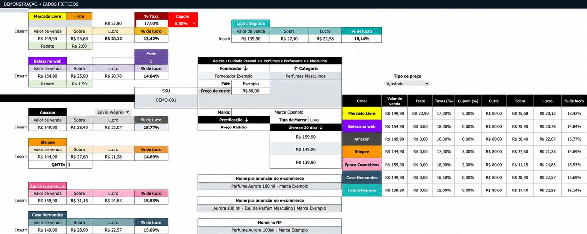
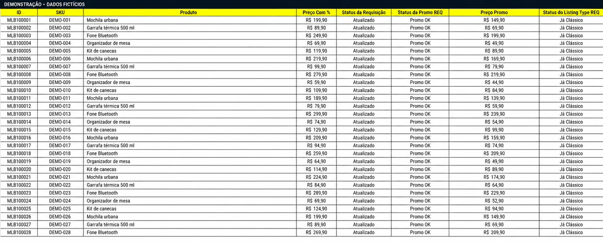
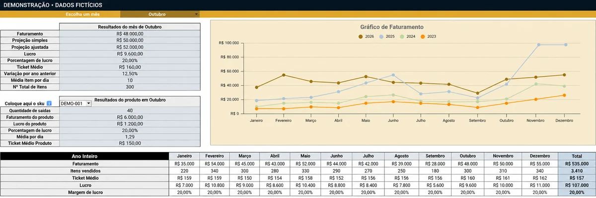
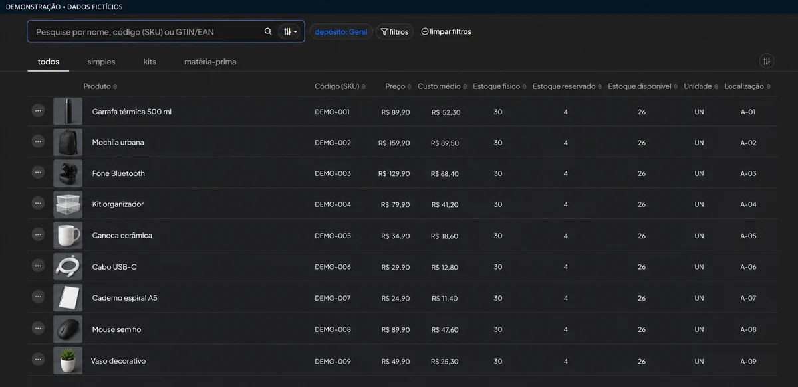
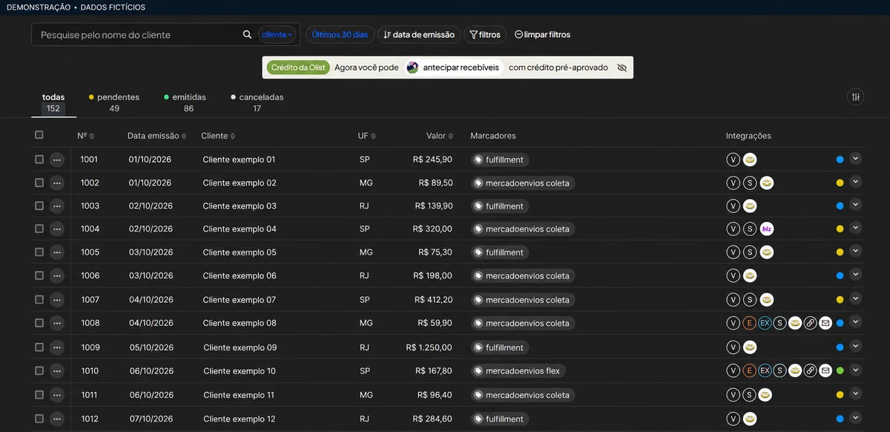
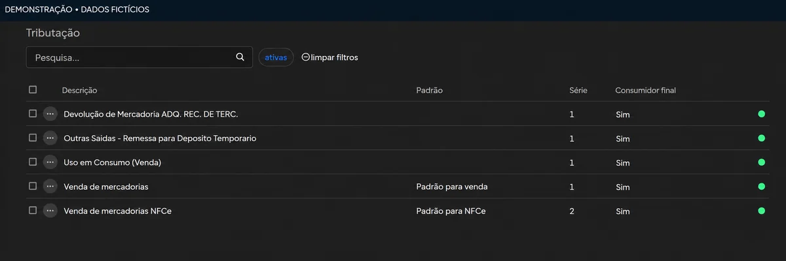
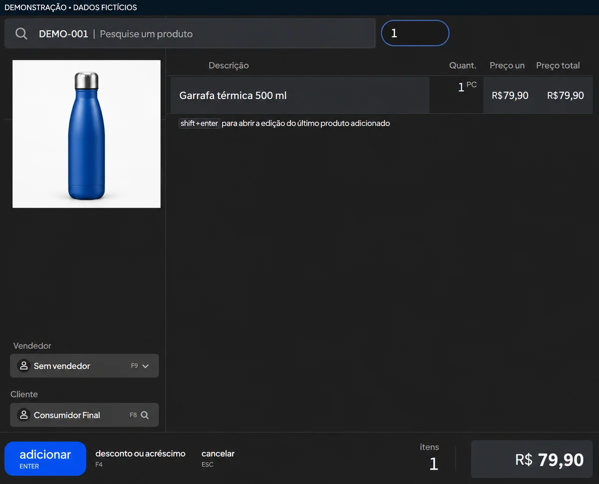
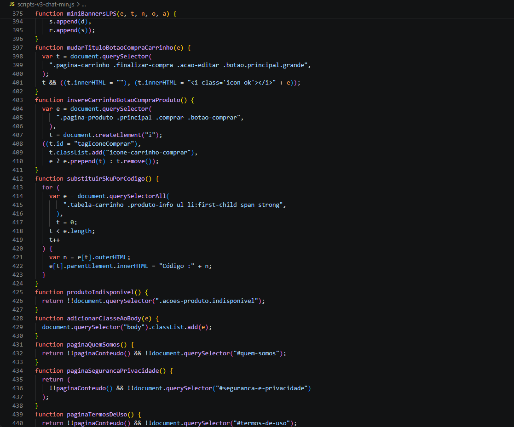
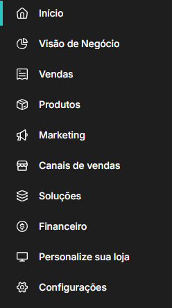

Marketplaces
Estratégia e organização para a sua operação de vendas online.
- Catálogo, anúncios e precificação
- Promoções e análise de desempenho
- Consultoria em Mercado Livre e Shopee
Aproximamos pessoas e empresas da tecnologia que faz sentido para a sua realidade. Da rotina do computador à gestão de uma operação de e-commerce.
Ferramentas e canais que fazem parte da nossa atuação
Conectamos conhecimento de negócios e tecnologia para encontrar a solução adequada à sua realidade.
Estratégia e organização para a sua operação de vendas online.
Menos tarefas repetitivas. Mais clareza para acompanhar o negócio.
Experiências digitais que acompanham a identidade da sua marca.
A estrutura tecnológica para sua rotina funcionar melhor.
O ponto de partida é o que você precisa resolver. Conheça alguns caminhos que podemos construir juntos.
Organizar custos, taxas e frete em uma planilha de precificação para apoiar decisões de preço.
Ver planilhasRevisar catálogo, estoque e processos, com consultoria adequada à fase do seu negócio.
Conhecer a consultoriaConectar sistemas e automatizar relatórios e tarefas repetitivas da rotina.
Explorar automaçõesCriar ou melhorar um site e uma loja virtual, com identidade própria e navegação clara.
Conhecer desenvolvimentoDiagnosticar dificuldades no computador e planejar instalação, manutenção ou melhorias.
Ver suporte técnicoAvaliar necessidades antes de investir em equipamentos, sistemas ou uma nova solução.
Conhecer soluções de TIConheça três formas de colocar sua ideia na internet, da apresentação do seu negócio a uma plataforma com operação própria.
Site institucional
Oficinas de arte infantil em Belo Horizonte, com apresentação dos formatos e agendamento pelo WhatsApp.
Ver projetoLoja virtual · Loja Integrada
E-commerce de perfumaria e beleza com vitrines, navegação por marcas e catálogo organizado por categoria.
Ver projetoPlataforma sob medida
Projeto que reúne adoção de pets, comunidade e uma loja com área para vendedores parceiros.
Ver projetoConheça projetos desenvolvidos pela NGTech: precificação, gestão de anúncios, relatórios, organização do ERP e desenvolvimento na Loja Integrada.

Uma planilha em Google Sheets para quem está começando a vender e quer aprimorar a precificação dos produtos da sua loja.
Reúne custo do produto, preço de venda, frete, taxas e margem de lucro para comparar cenários de venda em diferentes canais. Ajuda a entender o impacto dos custos antes de definir preços e descontos.
Demonstração com dados fictícios, preservando o visual da ferramenta. Clique para ampliar.

Uma ferramenta mais completa que conecta a conta do Mercado Livre à planilha e automatiza a gestão de preços, promoções e cupons.
A análise de rebate compara as condições da promoção com a margem mínima definida para o anúncio, apoiando decisões de precificação na operação.
Demonstração com dados fictícios, preservando o visual da ferramenta. Clique para ampliar.

Uma planilha de relatórios que reúne as vendas dos marketplaces da operação em uma única base, facilitando a visualização dos dados e o acompanhamento da margem de lucro.
Os relatórios conectam a visão geral do negócio aos detalhes de cada venda, ajudando a observar diferenças entre canais, produtos e períodos.
Demonstração com dados fictícios, preservando o visual da ferramenta. Clique para ampliar.

Organização de produtos, estoque, notas fiscais e PDV no Olist Tiny. Integramos os canais de venda e estruturamos a rotina do ERP, com as configurações fiscais alinhadas à contabilidade.
Estruturamos a rotina de entrada e saída no emissor de notas do Olist, desde a configuração até o uso no dia a dia.
A entrada por XML reduz a digitação manual e ajuda a evitar erros de cadastro. A conferência dos itens recebidos e dos vínculos entre canais contribui para prevenir furos de estoque.

Ampliar demonstração de notas fiscais
Ampliar naturezas de operação
Ampliar demonstração do PDVDemonstração com dados fictícios, preservando o visual da ferramenta. Clique para ampliar.

Desenvolvimento e personalização de sites na Loja Integrada, com JavaScript, CSS e configuração dentro da plataforma.
O trabalho conecta a personalização do site à configuração da plataforma para uma experiência coerente com a marca e a operação.
Ampliar print do CSS
Ampliar print das áreas de configuraçãoPrints originais recortados para ocultar a identificação da loja, preservando a aparência do editor e da plataforma.
As demonstrações de planilhas e ERP usam dados fictícios. Os recortes de código e configurações preservam a aparência das ferramentas utilizadas.
Um processo claro, do primeiro diagnóstico à entrega. Você entende o que está sendo feito e por quê.
Conhecer a rotina, ouvir os desafios e identificar o que precisa mudar.
Definir o escopo e colocar ferramentas, processos e tecnologia para trabalhar juntos.
Validar as entregas, orientar o uso e mapear os próximos passos.
A NGTech Solutions nasce da conexão entre conhecimento técnico e experiência na operação de e-commerce.
João Victor Vieira, CEO da NGTech Solutions, reúne atuação em tecnologia, automações e gestão de marketplaces para transformar desafios cotidianos em soluções práticas.
Nosso propósito é simplificar a tecnologia para impulsionar pessoas e negócios, com transparência, compromisso e atenção à realidade de cada cliente.
Conte o que sua operação precisa. Vamos encontrar a solução adequada para o seu negócio.
WhatsApp: (31) 98987-8715